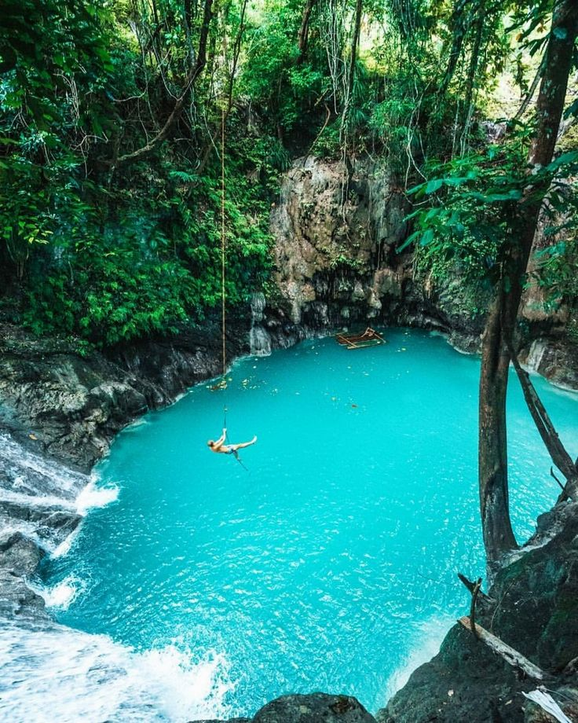
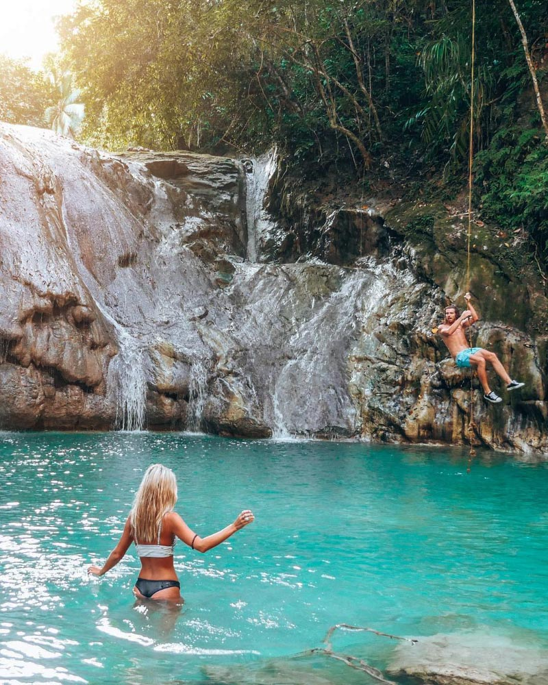
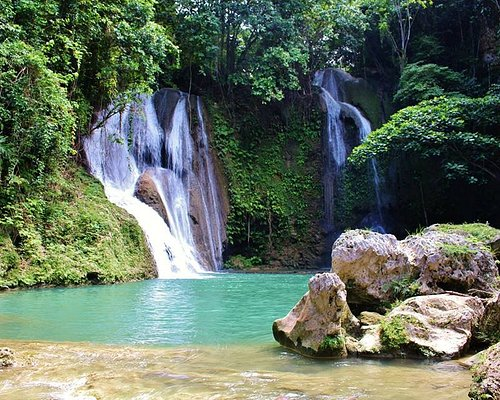

HOME
*Philippines Best Spots*
Welcome to the Pearl of the Orient Seas
Ingkumhan Falls is one of the best waterfalls in Bohol and a must-see while you are adventuring around the island. Cliff jumps and rope swings are just some of the reasons that make this Bohol tourist attraction one of the top locations to visit!As Ingkumhan Falls is a little off the beaten track, it doesn’t seem to get as busy as some waterfalls, although this might change as word spreads.The large pool at the base of the falls makes it a great place to have a swim and cool off.



Back